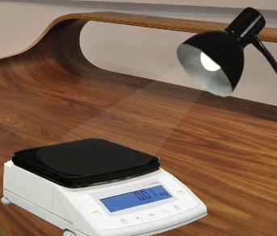

Background
Although both weight and light end in the same four letters, the two words do not rhyme and are rarely seen together as a result. Using basic physics and common household objects, however, it is easy to determine the weight of light.
Light is a collection of waves, much like the ocean. Varying colors are produced when a substance absorbs some of the energy in light waves and reflects the rest. Red colors have the longest wavelengths, and they get shorter as one progresses down the rainbow to violet. Therefore, a substance that appears red is absorbing all sizes of visible light wavelengths except the longest, and reflecting those long red wavelengths back to the viewer. Substances that absorb all visible light wavelengths appear black, and reflexively substances that reflect all visible light wavelengths appear white.
With this in mind, consider a black scale. When a light is shone on such a measuring device, it is absorbing all wavelengths of that light’s visible spectrum and thus bearing that additional weight. A white scale, on the other hand, is reflecting all wavelengths. This fact is often overlooked, and can skew results if a dark scale color is not factored into its initial calibration.
Theoretical Result
The energy of light (in joules) is a function of the bulb’s wattage and the amount of time that the light is turned on. In the real-world trials described in the following section, both of these factors are constants, so energy is calculated as such using these values. The energy figure is then interpreted as kinetic energy, which is a function of mass and velocity. Velocity in this case is the speed of light, which is a known constant. It is then easy to solve for the mass of light.
EJ = Pw ✕ ts
Pw = 60W ; ts = 10s
EJ = 600J
Ek = ½ m ✕ v2
v = 3✕108m/s
Ek = EJ = 600J
m = (600J / (3✕108m/s)2) ✕ 2
m = 1.3̅✕10-14kg
Therefore, the amount of light cast by a 60W bulb for 10 seconds weighs approximately 0.00000000000003 pounds.
Empirical Result
For the first trial, paint the weighing platform of a Sartorius CPA225D1 analytical scale with 0.01mg of white paint and calibrate it properly. Situate a desk lamp with a 60W incandescent bulb half a meter from the scale, and shine the lamp on the scale for exactly ten seconds. Record the weight reading at the end of the tenth second. For the second trial, paint the weighing platform with 0.01mg of black paint and repeat, recording the weight reading again at the end of the tenth second.
Thanks to the second-to-none precision of the Sartorius CPA225D,2 the varying weight readouts can be recorded down to the hundredth of a milligram. When these trials were run by the author, the painted-white scale read 0 mg and the painted black scale read 0.01 mg. In imperial units, that’s approximately 0.00000002 pounds. This is 99.999%3 higher than the theoretical value, showing the true risk of failing to calibrate scales to account for the weight of light.